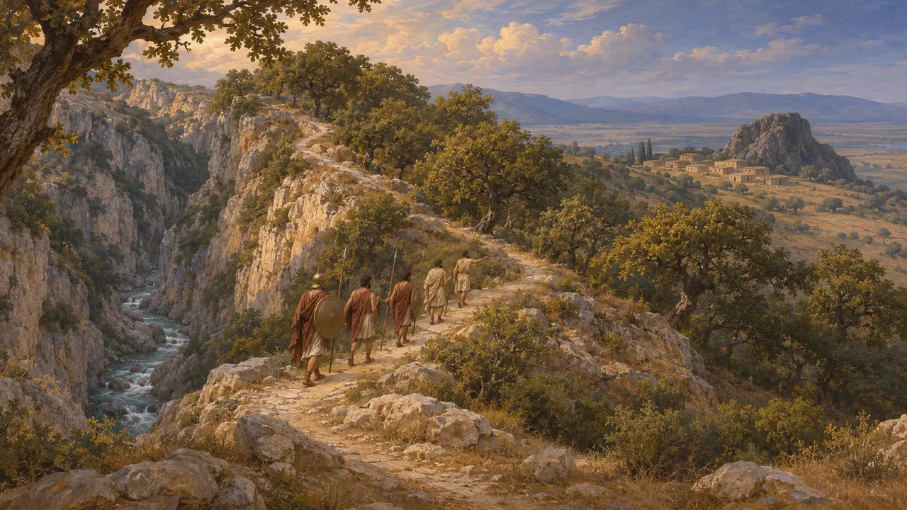
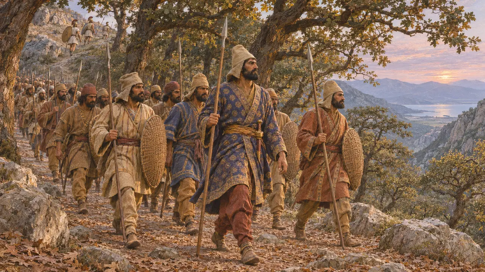
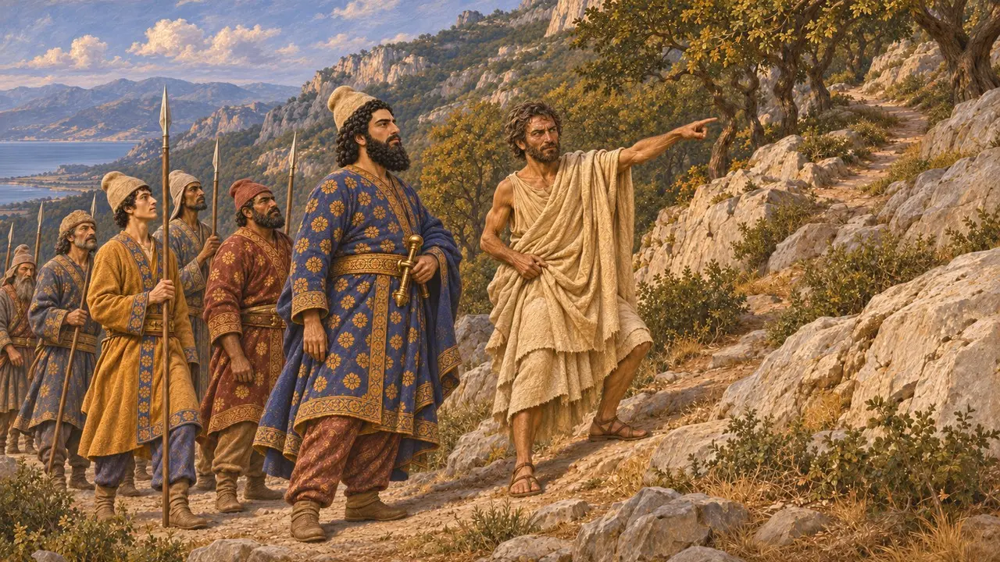
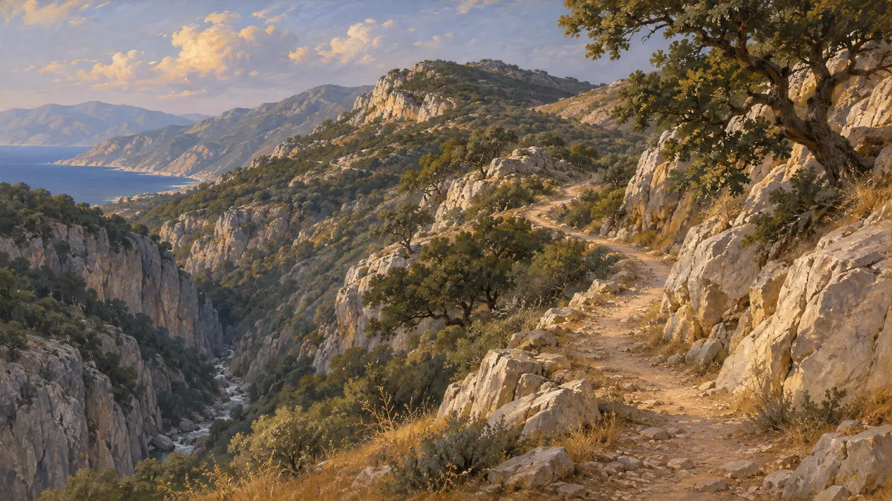
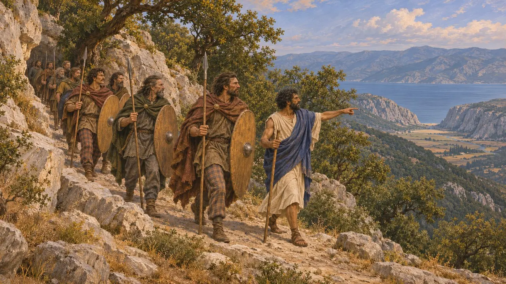

Le sentier de l'Anopée
Sentier de montagne contournant le défilé des Thermopyles, Grèce centrale, emprunté en 480 av. J.-C.
Dans le jeu : Niveau 10 : Les Portes chaudes
L'Anopée était un sentier franchissant les montagnes au-dessus des Thermopyles, qui permettait à une armée de quitter le défilé côtier et de redescendre sur ses arrières. En 480 av. J.-C., après deux jours d'assauts infructueux, Xerxès y envoya de nuit Hydarnès et ses troupes d'élite. Leur descente derrière la ligne grecque mit fin à la défense du défilé et ouvrit la Grèce centrale à l'armée perse.
Dans le jeu : Le jeu présente l'Anopée comme le sentier contournant les Thermopyles qu'indiqua Éphialte. Cela suit Hérodote, qui mentionne aussi d'autres guides présumés et rapporte que les habitants connaissaient déjà ce passage.

Le sentier tel que le décrit Hérodote
Récit antiqueSelon Hérodote, le sentier partait de la gorge de l'Asopos et portait le même nom que la montagne qu'il franchissait, Anopée. Il suivait la crête et redescendait à Alpènes, la première ville locrienne, près d'un rocher appelé Mélampyge. Il ajoute que les Maliens l'avaient découvert bien auparavant et y avaient guidé les Thessaliens pour attaquer les Phocidiens.
Herodotus 7.215-216

La marche nocturne d'Hydarnès
Récit antiqueSelon Hérodote, Hydarnès se mit en route à l'heure où l'on allume les lampes, franchit l'Asopos et grimpa toute la nuit. À l'aube, ses hommes atteignirent le sommet. Mille Phocidiens qui y montaient la garde les entendirent fouler les feuilles mortes des chênaies dans l'air immobile. Les Phocidiens se replièrent sur la cime pour y résister, mais Hydarnès les ignora et poursuivit sa descente vers le défilé.
Herodotus 7.215-218

Qui montra le chemin
ContestéHérodote nomme Éphialte, fils d'Eurydème, un Malien qui espérait une récompense de Xerxès. Il rapporte aussi une version concurrente désignant Onétès de Carystos et Corydallos d'Anticyre, qu'il rejette. Aucun texte perse ne mentionne les Thermopyles : la version perse des faits nous est donc inconnue. Comme les Maliens connaissaient déjà le sentier, les historiens pensent que les Perses ont pu trouver des guides parmi plusieurs habitants de la région.
Herodotus 7.213-214

Le tracé de l'itinéraire
ContestéLes topographes modernes ont parcouru les collines qui dominent les Thermopyles sans s'accorder sur le tracé exact. Ils divergent sur la part du chemin qui suivait la gorge de l'Asopos et sur la crête qu'il franchissait avant de redescendre près d'Alpènes. Depuis, les alluvions du fleuve ont repoussé loin le rivage, si bien que l'ancien défilé est aujourd'hui une vaste plaine. Il est donc difficile de faire correspondre le terrain au récit d'Hérodote.
P. W. Wallace, The Anopaia Path at Thermopylai, 1980

D'autres armées sur les mêmes hauteurs
Récit antiqueDes auteurs plus tardifs décrivent comment la défense des Thermopyles fut de nouveau contournée de la même manière. Pausanias rapporte que les Gaulois qui envahirent la Grèce en 279 furent menés par-dessus la montagne, comme les Perses l'avaient été. Plutarque raconte comment Caton gravit les hauteurs en 191 pour prendre Antiochos III à revers pour le compte de Rome. Ces exemples montrent que le défilé ne pouvait être tenu sans garder les collines qui le dominent.
Pausanias 10.22; Plutarch, Cato the Elder 13
Sources
- Herodotus 7.212-219
- Pausanias 10.22
- Plutarch, Cato the Elder 13
- P. W. Wallace, The Anopaia Path at Thermopylai, 1980
- J. F. Lazenby, The Defence of Greece 490-479 BC, 1993
- P. Cartledge, Thermopylae, 2006